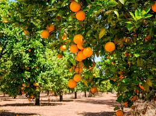
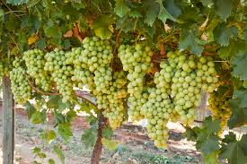
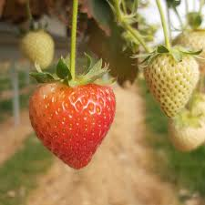
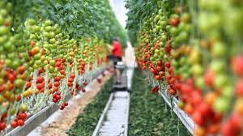
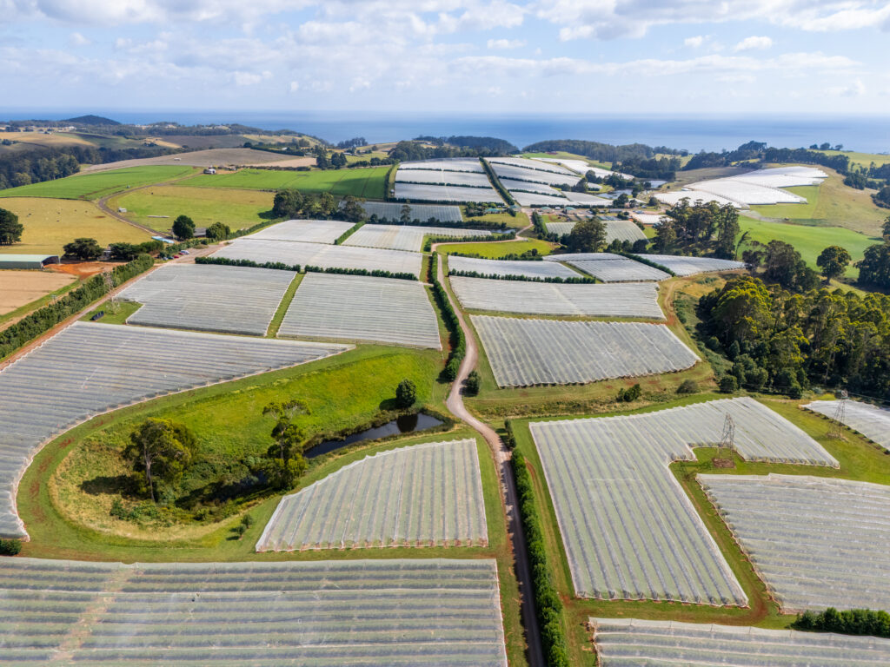

The annual Costa Well Grown Community Grants Program for the Armidale and Guyra region is now open for applications. This vital program invests in local projects that strengthen the social fabric and economic resilience of our agricultural heartlands through education and health support.

Premium Citrus Harvesting
Our citrus orchards are managed with absolute precision to meet global quality standards. Every fruit is hand-picked at the peak of ripeness to ensure a rich vitamin C profile and natural sweetness. We use sustainable farming techniques to protect the soil health for future generations of Australian growers.

World-Class Grapes & Vineyards
Costa's vineyards are situated in prime climatic regions that allow for the production of superior table grapes. We monitor moisture and nutrient levels daily to ensure large, sweet bunches that offer a crisp texture and deep flavor. Our trellis systems protect the delicate clusters from environmental stress.

Succulent Strawberry Production
Our strawberries are grown in controlled environments using advanced substrate technology to minimize water waste and soil diseases. We prioritize varieties known for their deep red color, firm texture, and incredible natural aroma. Greenhouse farming allows for consistent year-round supply.

Advanced Glasshouse Tomatoes
Our glasshouse tomato facilities are a marvel of modern agricultural engineering, producing high-density nutrition year-round. Using hydroponic systems, we deliver precise nutrients directly to the roots, resulting in superior flavor and vibrant color. We rely on biological controls instead of harsh chemicals.

Agricultural Infrastructure Future
We are building the future of food security through massive investments in solar energy and water recycling plants across our farms. This infrastructure allows us to achieve high yields on a smaller footprint, preserving natural habitats around our facilities. Our focus is feeding a growing population.
Grown around the world
Expanding our expertise globally, we've developed berry farms in China, Morocco and Laos. Working sustainably with the land to maximise optimal growing conditions around the country.